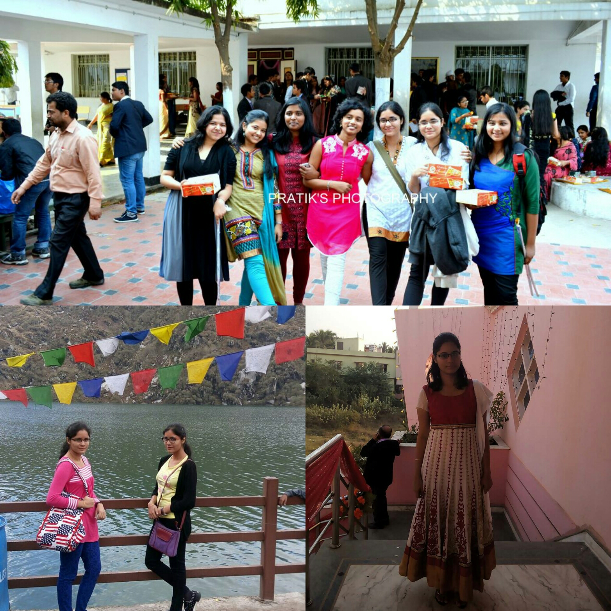
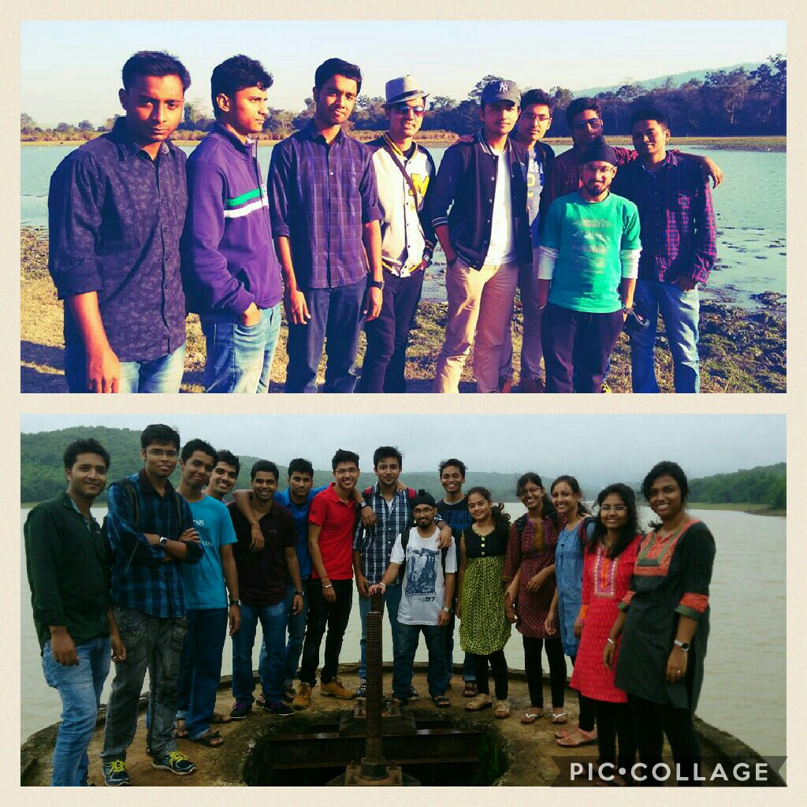
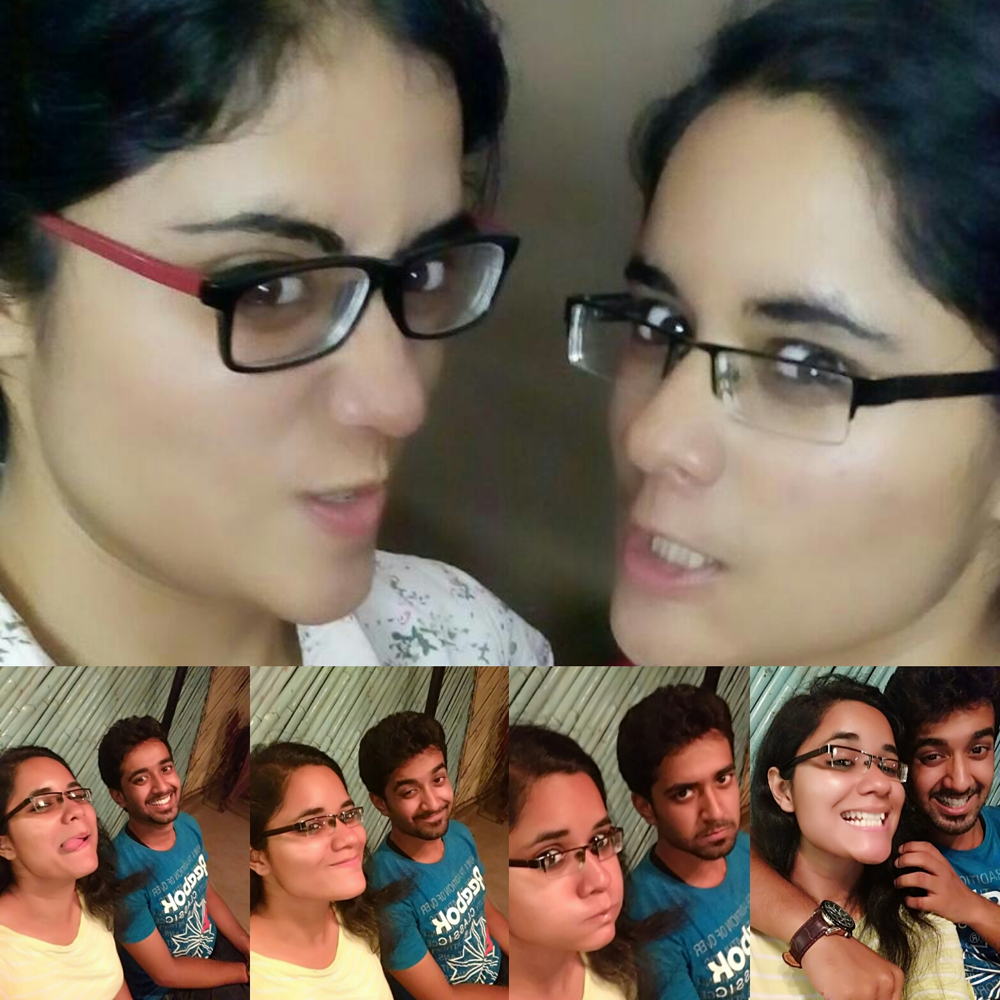
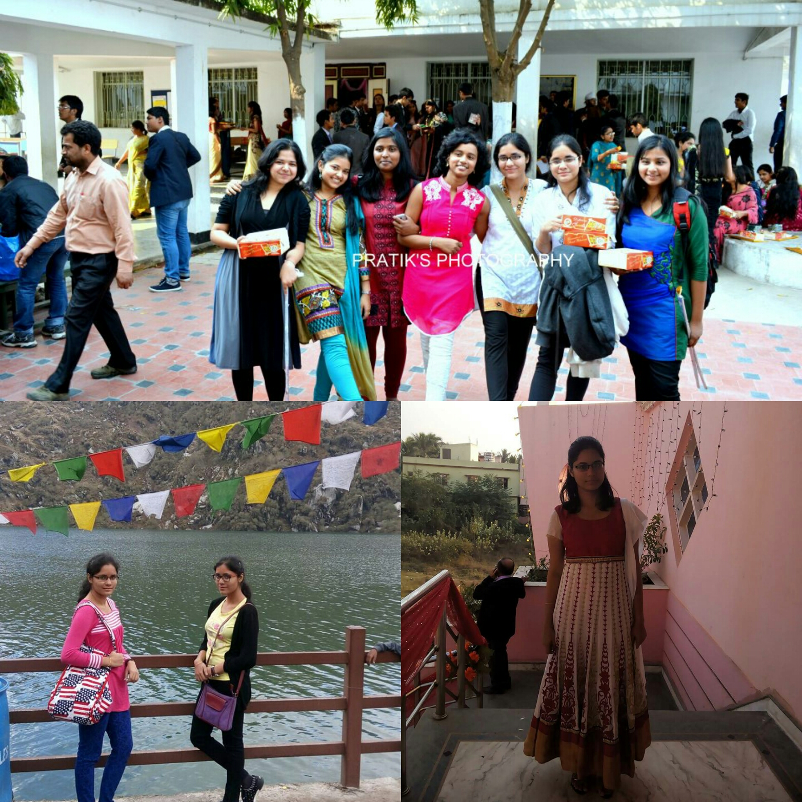
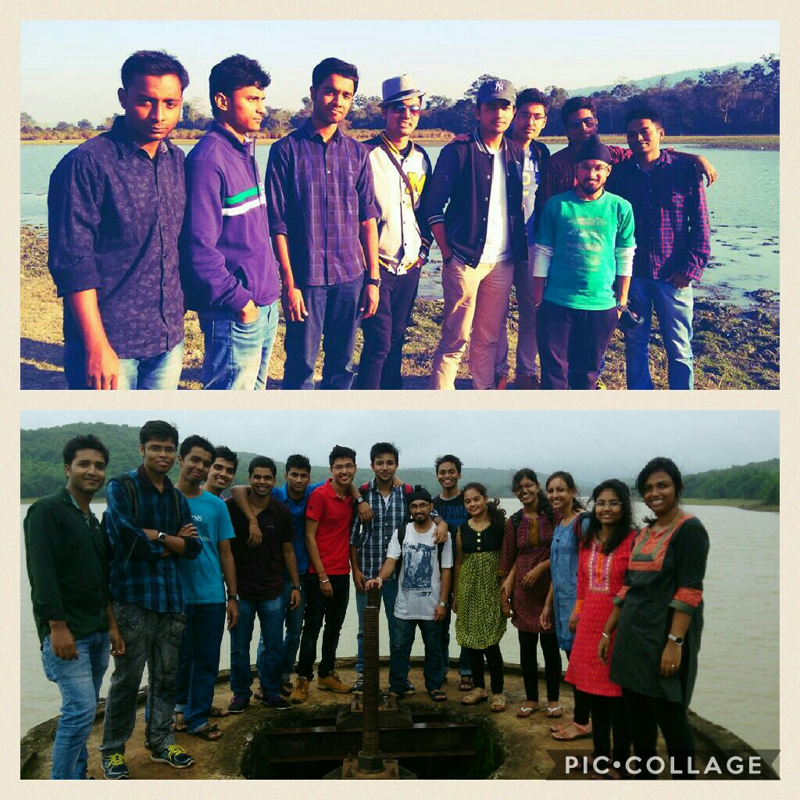
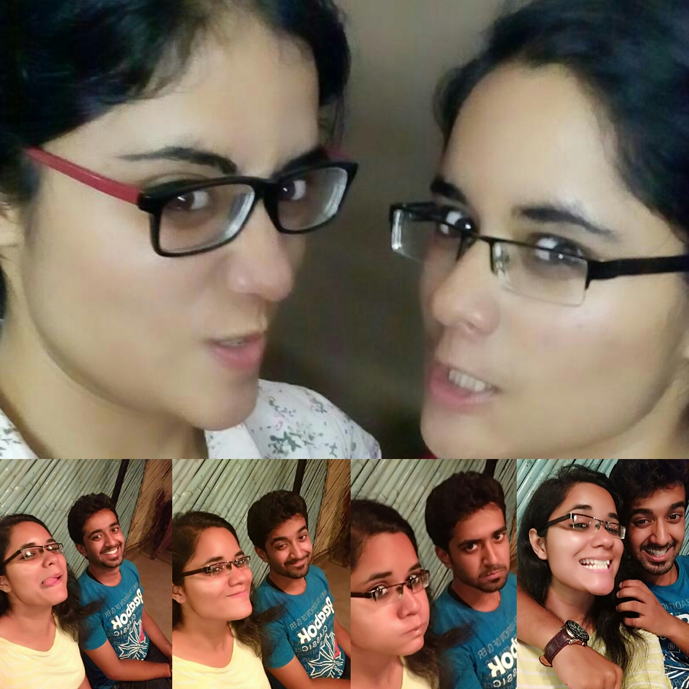

Someone so captivating, charming, intriguing And Unique!

Quiet obvious why people around finds youAmazing and Charming!
Some moments to cherish for life...
You had a lot of fun, went places, made priceless memories
 





Let's add another extravaganza to your memories
Happy birthday varsha chatt-pe-thi :D (sorry kuch acha nam nahi rakh paye tera) having known u since my first day of school , you hold a special place for my childhood self. We have shared some countless, wonderful moments together from being batchmates to friends.
I'm glad to have known you. I relish those memories of random intercom calls, tiffin breaks, talks about our cats and lives, in general. As u're turning a year old today i hope a bucketload of good things comes ur way this year. keep growing into the amazing person u already are. Lots of love.
PS: I will always remember you for that nagin dance :P
Dear Tharki,
Well it's an unfortunate incident for the world that u were born, and even unfortunate incident for u that u found me..
you are and will be the oldest and the most idiotic person i could know in a lifetime.
From tricycling by your house , shirttearing session , my first slap receiving time, to bitching about other people
karate punches....
teasing u with the sel proclaimed divas of our class, we in a lot way grew up. what i wanted to say idiot is i love you. and u were always a part of my life. no matter what how distant i went or how casually i took our friendship.
We both have a long way to go and i'm pretty sure we'll be at each others side no matter how many physical miles between us. so keep it in short happy birthday bitch and dont worry i'll always stick around.
Varshaaa!!! Wish u a very happy birthday sweety! I still remember those fun times we had in our school days.. from being benchmates in class 6 to being tuition mates in mithun sir's tuition.. ur lucky t-shirt u always wore for the tests in which it was written "serial killer"(god knows why u kept wearing that always)
our small fight we had in class 6 (cuz of which u changed ur seat but came back after everything was good). uncountable outings at your home.. the holi party at your backyard when we were i guess in 6 or 7.. the most epic one was your nagin dance
you have always been a very sweet and darling friend of minen i wish our friendship continues like this. Lots of luv to you and best wishes for ur birthday.!
Like the wind blows through the trees, so friendship blows through our lives.
Thankfully, for us, ours sticks.
Happy Birthday this year and always! Stay blessed and Party hard Varsha!
She's a flower.. innocent enough to steal ur heart; she sways in the d breeze carefree..
Driving millions of bees crazy.. to d girl wid d purest heart.. Happy Birthday..
May u keep infecting the world with ur infecting smile forever.!-SWIKRUTI.
Barsha moti.... Happy Birthday.. tu auhuri sundar heijaa..
khelaw kru tha...
And i hope Our friendship keeps getting stronger ..!! LAVA You.. ur loving motii-LIPSITA
Puchkiiiii....u r the best thing that has ever happened to me. We have been together even before we were born and since the beginning of time,
U have not just been my sister, but u have been a mother, a brother, a best friend, a soul mate and for that matter, u have been every relation i cn ever thnk of.
I love you, Ms. Varsha Satpathy, I love you more than anything else in the world, and I promise to protect u from every obstacle that can ever harm u. And today u hv to decide the name i gotta call u this year from the numerous names i have given to u. And yeah mom Dad sent there wishes as well.. HAppy Birthday From their Side...LOVE from MOM.. BLessings from papa.. Some Gaalis and ashirwaad from DADI... and well wishes from DADU...!
Hey there...knock knock.. who's it behind the lappy.. Hey its the birthday girl...Happy birthday! What is she doing... OMG.. there's a dashing guy as well..that's me BC,..(BC...hmmm my mind!) WEll WEll i haven't done A PHD, like ur frnds really have done, in wishing happy bday.. man they can write some thesis..! ;
Well so much of love and their affection shows how much of an amazing and pure hearted person u r..After hearing out all this (and literally typing it with my own hands), respect for u has increased a thousand folds. A person whom i've always admired, someone with whom moments are always way too special.. Always cheerful and spreading happiness is what ur forte is.. though sab bore ho jate hai bs bolte nahi.. kon ladai mod le tere sath bol to..!
Just wanted to tell u that Whatever it is in between us... its gonna be there for the rest of our lives..
Those nose khicha khichi.. those kutu kutu and every insane thing that we dream of doing together..
Am gonna be there..... right by your side... while we accomplish those dreams together..
Simply can't imagine my life without u.. I Love You Varsha..!
Many Many happy Returns Of the Day Varsha! Hope u loved and enjoyed this...
Ms. Megha Satpathy... happy Birthday to u too.. literally forgot in the midst of everything.. i hope u find it in your heart to
forgive such a grave sin(pata hai zyada buttering hai pr kya karu.. krni padti hai) may god bless u with more success
and prosperity.. and may u reign as the DEVIL QUEEN! ( yes i've seen the pic ;) ) Hope to meet up soon.!
Thanks Rishav for ur help.. without u this wouldn't have been a real thing.!
Many Many
Happy Returns of the Day!